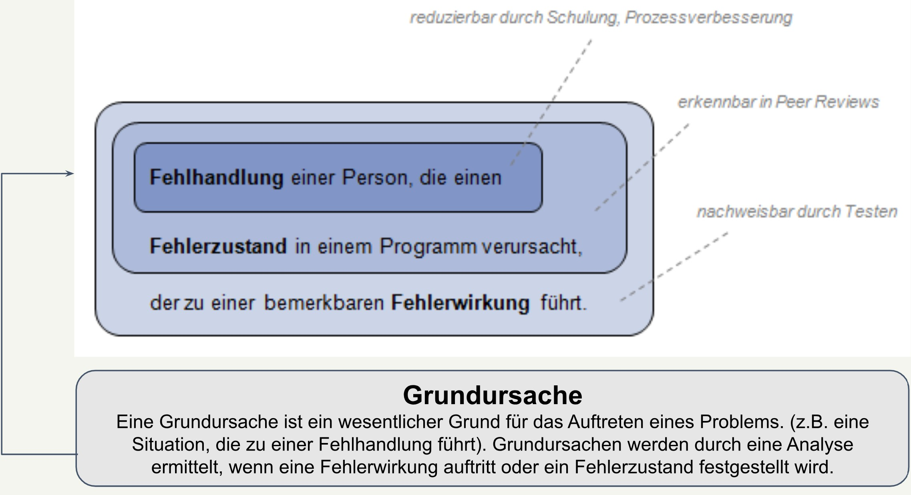
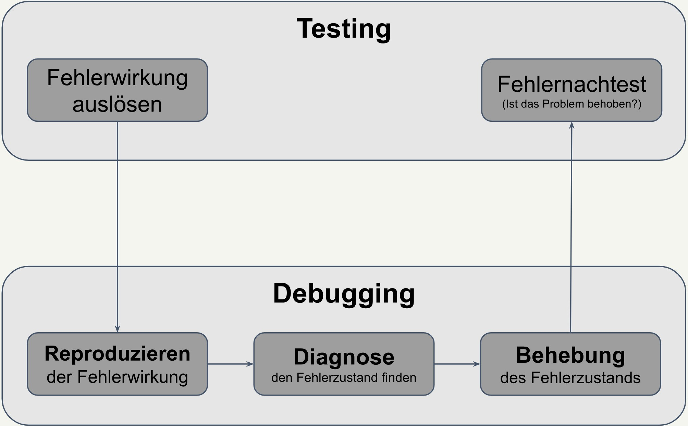
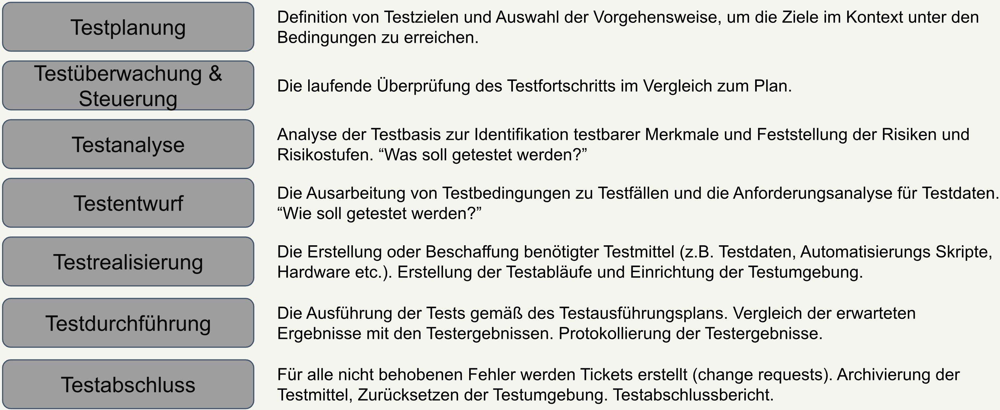

-
Kurseinführung F 01
- Titelfolie und Agenda F 01–02
-
Was ist Testing? F 03
- Entwickler vs. Tester und Karrierepfad: Testerrollen F 04–05
- Warum Testen wichtig ist – Reale Beispiele F 06–08
-
Kursübersicht F 09
- Lehrplan / Kursübersicht F 09–10
-
Tipps & Tricks / Homepage & Assessment Sheet F 11
- Tipps & Tricks F 11–12
-
Grundlagen des Testings F 13
- Begriff, Ziele, Erfolgsbeitrag, Testen vs. QA F 14–17
-
Bugs & Testing F 18
- Fehlerhandlung / Zustand / Wirkung / Grundursachen; Testen und Debugging F 19–20
-
Grundsätze des Testens F 21
- 7 Grundsätze; Organisation; Aktivitäten; Kompetenzen; Whole-Team; Unabhängigkeit F 22–27
| Entwickler | Tester |
|---|---|
| Schreibt Code | Software testen |
| Entwickelt Softwarelösungen | Fehler identifizieren |
| Debugging & Fehlerbehebung | Qualität & Zuverlässigkeit sichern |
| Funktionalitäten umsetzen | Gebrauchstauglichkeit & UX gewährleisten |
- Funktionaler Tester
- Test Automation Engineer
- Testkoordinator
- Testmanager
Quelle: istqb.org/certifications/certified-tester-foundation-level
3 Folien → werden zu 1 zusammengefasst
- A400M Airbus – Tödlicher Absturz wegen Softwareproblemen
- CrowdStrike-Update – Blue Screen of Death, Windows-PCs weltweit lahmgelegt; enormer Aufwand trotz Fix
- Tesla Rückruf – Fahrzeug-Firmware nicht ausreichend getestet → Rückruf wegen unbeabsichtigtem Öffnen der Fronthaube
Wochen 1–4: Grundlagen & Portfolio
| Woche | Inhalte |
|---|---|
| Woche 1 | Grundlagen des Testings · Testing im Softwareentwicklungslebenszyklus · Statisches Testen |
| Woche 2 | Testanalyse & Testdesign · Blackbox-Techniken |
| Woche 3 | Whitebox-Techniken · Anforderungsanalyse, Testplan (+ Portfolio-Start) |
| Woche 4 | Testfalldesign · Testumgebungen, Testausführung & Testberichte |
Wochen 5–8: Auswahl
| Auswahl: Testautomatisierung | Auswahl: Manueller Tester |
|---|---|
| Pytest | Jira |
| XPass | DevTools |
| Selenium | Source Labs |
| Page Object Model | Postman |
Optional: ISTQB Zertifizierung (Woche 8–10)
Übungsstunden, Lernen & Üben · Übungstermin vereinbaren
- Auf Stunden vorbereiten
- Portfolio: fleißig & genau pflegen → wird Teil der Bewerbung / von Arbeitgebern angesehen
- Viele Fragen stellen & Ressourcen nutzen
Softwaretesting ist:
Eine Reihe von Aktivitäten zur Entdeckung von Fehlerzuständen und zur Bewertung der Qualität von Arbeitsergebnissen der Softwareentwicklung.
Testing ist NICHT (häufige Fehlvorstellungen):
- „Nur" Tests durchführen
- Fokus nur auf Verifikation
- Kann 100% automatisiert werden
- Ermöglicht vollständig fehlerfreie Software
- Evaluieren von Arbeitsergebnissen
- Auslösen von Fehlerwirkungen & Finden von Fehlerzuständen
- Verifizierung der Anforderungen
- Bereitstellen von Informationen für Stakeholder
- ⚠ 3 Unterpunkte fehlen noch – nachliefern
- Aufbauen von Vertrauen
- ⚠ 3 Unterpunkte fehlen noch – nachliefern
- Testen ist ein kosteneffizientes Mittel zur Erkennung von Fehlerzuständen
- Direkte Bewertung der Qualität eines Testobjekts
- Indirekte Darstellung des Entwicklungsprojekts
- Testen kann erforderlich sein, um vertragliche oder gesetzliche Anforderungen zu erfüllen
| Qualitätssicherung (QA) | Testen | |
|---|---|---|
| Ansatz | Prozessorientiert & präventiv | Produktorientiert & korrigierend |
| Fokus | Implementierung & Verbesserung von Prozessen | Aktivitäten zur Erreichung eines angemessenen Qualitätsniveaus |
Visualisierung: Testen ist eine Teilmenge von QA (großer Kreis = QA, kleiner innerer Kreis = Testen)


- Testen zeigt das Vorhandensein, nicht die Abwesenheit von Fehlerzuständen
- Vollständiges Testen ist unmöglich
- Frühes Testen spart Zeit und Geld
- Fehlerzustände treten gehäuft auf
- Tests nutzen sich ab
- Testen ist kontextabhängig
- Trugschluss: „Keine Fehler" bedeutet kein brauchbares System
7 Einflussfaktoren auf den Testprozess:
- Stakeholder – bestimmen Anforderungen & Erwartungen
- Organisatorische Faktoren – Budget, Struktur, Prioritäten
- Marktbedürfnisse – Kundenerwartungen
- Werkzeuge – verfügbare Test-Tools
- Software-Entwicklungslebenszyklus – Testphase im Prozess
- Teammitglieder – Kompetenzen & Zusammenarbeit
- Technische Faktoren – Technologien, Systeme, Komplexität
→ Testen ist kein Inselbetrieb, sondern eingebettet in die gesamte Organisation.

- Testwissen
- Gründlichkeit
- Methodisches Vorgehen
- Detailgenauigkeit
- Kommunikationsfähigkeit
- Analytisches und kritisches Denken
- Technische Kenntnisse
- Wissen in der Anwendungsdomäne
(+ weitere Kompetenzen möglich)
- Jedes Teammitglied, das über die erforderlichen Kompetenzen verfügt, kann jede Aufgabe ausführen
- Jeder ist für die Qualität verantwortlich
Ein gewisser Grad an Unabhängigkeit macht den Tester effektiver bei der Fehlerfindung, da sich die Voreingenommenheit (kognitive Verzerrungen) zwischen Autor und Tester unterscheidet.